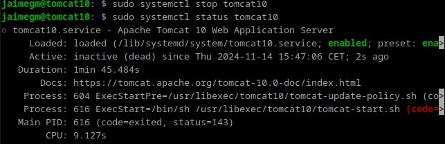
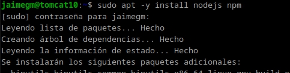
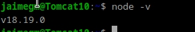
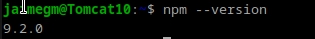
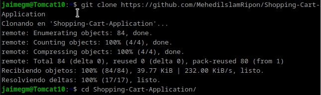
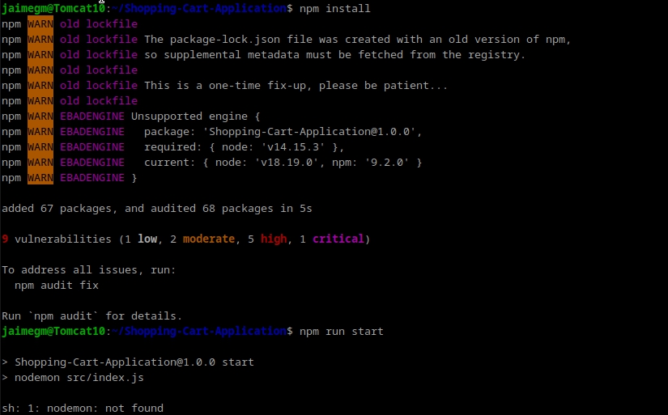
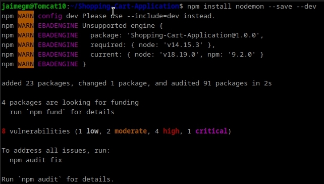
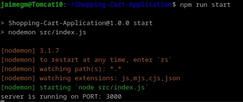
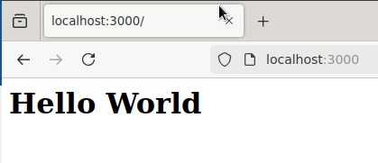

Practica 3.2: Despliegue de Aplicaciones con Node Express
Jaime Grueso Martin
Indice
- Introducción
- Instalación de Node.js, Express y Test de la Primera Aplicación
- Despliegue de una Nueva Aplicación
- Cuestiones
Introducción
En esta práctica se procederá a el despliegue de aplicaciones con Node Express.
Primeramente, se parará el servicio de Tomcat para evitar problemas a la hora de desplegar la aplicación.

Instalación de Node.js, Express y Test de la Primera Aplicación
Para instalar Node.js y NPM, se ejecutará el siguiente comando:

Para comprobar que se han instalado correctamente, se ejecutarán el siguiente comando:


A continuación, se procederá a clonar un repositorio de GitHub con una aplicación de ejemplo. Para ello, se ejecutará el siguiente comando y después se accederá a la carpeta de la aplicación:
Despliegue de una Nueva Aplicación

Dentro de la carpeta de la aplicación, se ejecutará el siguiente comando para instalar las dependencias de la aplicación:

Como se aprecia hay un error en la instalación de las dependencias, sh: 1: nodemon: not found. Para solucionar este error, se ejecutará el siguiente comando:

Una vez solucionado el error, se procederá a ejecutar la aplicación con el siguiente comando:

Si se accede a la dirección http://localhost:3000/, se podrá ver la siguiente pantalla:

Cuestiones
Cuando ejecutáis el comando npm run start, lo que estáis haciendo es ejecutar un script:
¿Donde podemos ver que script se está ejecutando?
¿Qué comando está ejecutando?
Cuando se ejecuta npm run start, el comando que se ejecuta está definido en el archivo package.json, en la sección scripts. Simplemente se abre package.json y se comprueba qué comando está asociado a start.